Проведите сопоставление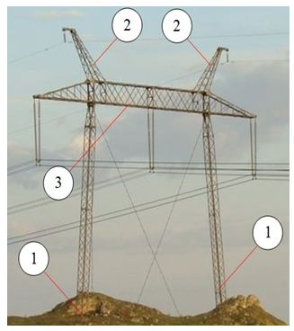
Проведите сопоставление между номерами и обозначениями элементов кабеля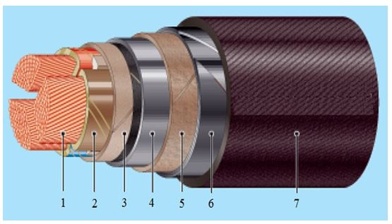
Провести сопоставления между номерами и типами электростанций. Распределение графиков нагрузки электростанций в суммарном графике нагрузки ЭЭС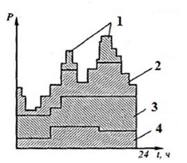
Провести сопоставления между терминами и их определениями
Электрическая сеть
Линия электропередачи
Электроэнергетическая система
Электрическая подстанция
Сопоставить допустимую нагрузку трансформаторов в нормальном режиме и категорию электроснабжения
Сопоставить категорию электроснабжения и соответствующие ей электроприемники
Сопоставить термины и их определения
Сопоставить термины и определения
Сопоставить термины с их определениями
Базовая часть суточного графика электрической нагрузки:
В двухобмоточном трансформаторе устройство РПН устанавливается на:
В линии на холостом ходу напряжение вдоль линии к ее концу
В нагруженной линии с односторонним питанием :
В распределительных сетях напряжением до 35 кВ сечение выбирается из условия минимума проводникового материала:
В современной электроэнергетике действует:
В трехобмоточном трансформаторе устройство РПН устанавливается на
Выберите магистральную нерезервированную неразветвленную схему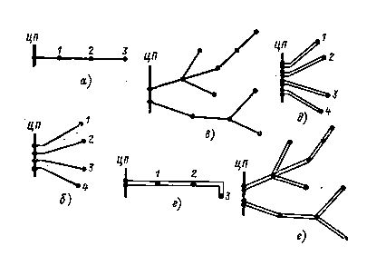
Выберите полуторную схему из представленных на рис.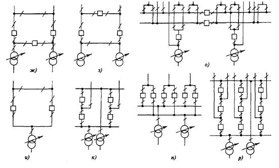
К чему приводит завышение ожидаемых нагрузок потребителей при проектировании?
Выбрать формулу для определения сечения проводника методом экономической плотности тока
Fэк=Iр/jэк
Fэк=jэк/Iр
Fэк=Iр×jэк
Выберите радиальную резервированную схему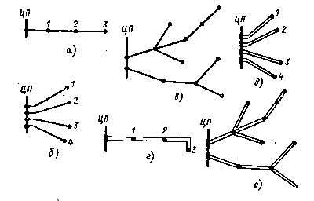
Выберите схему мостик с выключателями в цепях линий из представленных на рисунке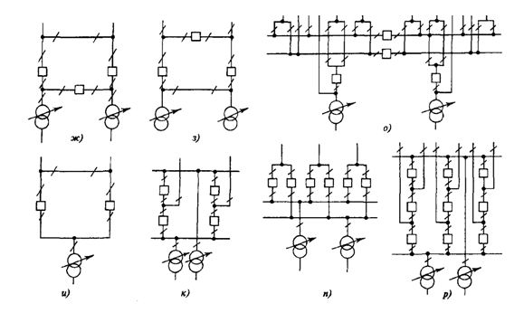
Выберите схему четырехугольник из представленных на рис.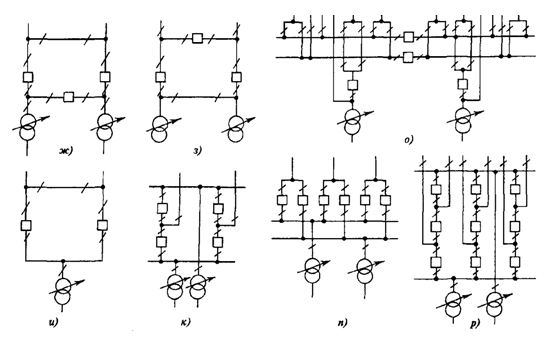
Выбрать из приведенных на рис. четырехжильный кабель напряжением до 1кв
Выбрать марки кабеля с алюминиевыми жилами, с бумажной изоляцией:
Выбрать марки кабеля с алюминиевыми жилами, с полиэтиленовой вулканизированной изоляцией:
Выбрать на рис. петлевые схемы сети:
Выбрать на рис. схемы с ответвительными подстанциями
Выбрать подстанции по способу присоединения к сети:
Выбрать правильную последовательность расчета режима по данным конца:
1.Определить падение напряжения на последнем участке сети.
2.Определить потери мощности на последнем участке сети.
3.Определить мощность в конце последнего участка сети.
4.Определить мощность в начале последнего участка сети.
5.Определить напряжение предпоследнего узла сети.
6.Определить мощность в конце предпоследнего участка сети
Выбрать правильную схему замещения трехобмоточного трансформатора:
Выбрать правильную формулу для расчета потерь мощности на участке сети 1-2 по данным начала:
Выбрать пункты, относящиеся к классификации электрических сетей по конфигурации сети
1) магистральные сети;2) промышленные сети;3) городские сети;4) сети высокого напряжения;5) кольцевые сети;
6) питающие сети
Выбрать пункты, относящиеся к классификации электрических сетей по выполняемым функциям
Выбрать пункты, относящиеся к классификации электрических сетей по характеру потребителя:
Выбрать расположение проводов на опоре бочкой:
Выбрать резервированную неразветвленную магистраль
Выбрать схему сети с тупиковой подстанцией:
Выбрать схемы магистрали с двухсторонним питанием из приведенных на рис.:
Выбрать схемы сети с транзитными подстанциями
Выбрать схемы сети с узловой районной подстанцией:
Выбрать схемы сложнозамкнутых сетей из приведенных на рис.:
Выбрать тип опоры, относящейся к номинальному напряжению 500 кВ:
Выбрать условные обозначения, относящиеся к защитным покровам (броне) кабеля:
Выбрать условные обозначения, относящиеся к оболочкам кабеля:
Выбрать электростанции, относящиеся к возобновляемым источникам энергии:
Динамические характеристики нагрузки – это зависимости активной и реактивной мощности от напряжения при:
Для соблюдения баланса активной мощности в сети при превышении мощности потребления над генерацией необходимо:
Единая национальная электрическая сеть (ЕНЭС) – это электрическая сеть напряжением
Емкостной проводимостью в схеме замещения воздушных линий пренебрегают в линиях напряжением
Если генерируемая реактивная мощность в системе больше потребленной, то :
Идеальный трансформатор:
Из приведенных на рис. выбрать кольцевую сеть:
Изменятся ли потери мощности в линии с двухсторонним питанием, если изменится напряжение одного из питающих пунктов?
К динамическим показателям оценки эффективности инвестиционных проектов в электроэнергетике относятся:
К основному ряду стандартных номинальных напряжений относятся:
К статическим показателям оценки эффективности инвестиционных проектов в электроэнергетике
К эксплуатационным издержкам в электроэнергетике относят
К эксплуатационным издержкам относятся:
Капитальные вложения в проектируемую сеть включают в себя:
Компенсация реактивной мощности необходима для:
Магистральные сети -
На территории одного субъекта Российской Федерации могут функционировать:
Неравномерность графика во времени определяет:
Несимметричные режимы являются следствием:
Опоры анкерного типа служат для:
Определить потери напряжения для участка сети с параметрами: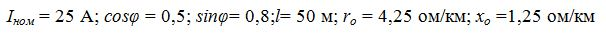
Основная функция энергосбытовых компаний:
Основные задачи оперативного персонала электросетевых предприятий:
Основными функциями Совета рынка являются:
Выберите напряжения, на которых применяется схема заход-выход
Выберите промежуточные опоры
Как определяется продольная составляющая падения напряжения?
∆U=(PR+QX)/U
∆U=(PR-QX)/U
Как определяется поперечная составляющая падения напряжения?
δU=(PX-QR)/U
δU=(PR-QX)U
δU=(PX+QR)/U
Tmax=W/Pmax
Tmax=Pmax/W
Напряжение на шинах НН подстанции при установке переключателя РПН на ответвление 115+3х1,78% равно 10,2 кВ. Чему будет равно это напряжение, если переключатель РПН установить в положение 115+2х1,78 %
В каких сетях присутствует уравнительная мощность?
В линиях какой длины можно пренебречь распределенностью параметров?
В схемах замещения каких линий можно пренебречь активной проводимостью?
В электроустановках на какое напряжение применяют трехпроводные сети с изолированной нейтралью?
Выберите напряжение, на котором применяется полуторная схема РУ станций и подстанций
Выбрать номинальную мощность силового трансформатора 110/10 кВ в МВА, если Рср=25 МВт, Qср=20 Мвар
Выбрать схему замещения двухобмоточного трансформатора: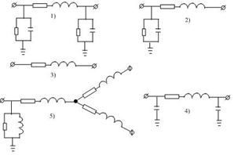
Выразить потерю напряжения в процентах (%) при следующих исходных данных: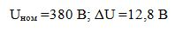
Габарит линии над землей - это:
Для регулирования напряжения в конце линии включен синхронный компенсатор (СК). В каком режиме должен работать СК при передаче натуральной мощности?
Для чего нужна транспозиция проводов?
Источники реактивной мощности на какое напряжение более экономичны?
К пиковым электростанциям относятся:
Отметьте правильный ответ. К сцепной арматуре относятся:
К чему может привести чрезмерно высокая температура нагрева проводника?
Как влияет расщепление фазы на величину зарядной мощности линии?
Как зависит предельная мощность от длины воздушной линии?
Как изменится активное сопротивление трансформатора, если его номинальное напряжение увеличится вдвое, а остальные параметры не изменятся?
Как изменится индуктивное сопротивление линии, если увеличить расстояние между фазными проводами?
Как изменится индуктивное сопротивление линии, если расщепить фазу на n параллельных проводов?
Как изменится напряжение на шинах низкого напряжения подстанции с автотрансформатором, если, используя РПН в обмотке среднего напряжения, коэффициент трансформации изменить в сторону уменьшения,
Как изменится напряженность электрического поля на поверхности провода если фазу расщепить на 3 провода?
Как изменится поперечная составляющая падения напряжения, если снизится реактивная мощность, протекающая по линии?
Как изменится потеря напряжения в линии напряжением 35 кВ, если скомпенсировать всю реактивную мощность?
Как изменится продольная составляющая падения напряжения, если снизится реактивная мощность, протекающая по линии?
Как изменяется зарядная мощность линии при увеличении расстояния между фазами линии?
Как изменяется индуктивное сопротивление линии, если уменьшить расстояние между фазами?
Как изменяется напряжение по длине линии, если за счет регулирования напряжения оно удерживается неизменным по величине по ее концам?
Как изменятся активные потери мощности в трансформаторе, если силовой трансформатор напряжением 110 кВ заменить на силовой трансформатор напряжением 220 кВ при неизменной мощности нагрузки, номинальной мощности трансформатора, ΔРх и ΔРкз?
Как изменятся потери активной мощности в линии напряжением 6 кВ, если она будет переведена на напряжение 10 кВ?
Как изменятся потери активной мощности в сети, если сопротивление сети уменьшится в 2 раза?
Как изменятся потери активной мощности сети, если напряжение сети увеличится вдвое?
Как изменятся потери электроэнергии в трансформаторе, если потери мощности короткого замыкания увеличатся в 2 раза при неизменных остальных параметрах?
Как изменятся потери электроэнергии в линии, если время подключения нагрузки к линии увеличилось с 3000 час до 6000 час в год?
Как найти напряжение на шинах низкого напряжения (НН) подстанции, если известно напряжение на шинах высокого напряжения (ВН)?
Как определяется коэффициент реактивной мощности?
Как определяется мощность компенсирующего устройства, подключаемого к шинам подстанции, если известны максимальная мощность нагрузки или ток, коэффициент реактивной мощности нагрузки, tgφнагр, предельный коэффициент реактивной мощности, определяемый в соответствии с приказом Минэнерго РФ, tgφпред ?
Как представляют нагрузки при расчете режимов в нерегулируемых нагрузочных узлах?
Как представляют нагрузки при расчете режимов в регулируемых узлах сети?
Какая система не имеет четвертого (нулевого) провода?
Какие параметры необходимо знать, чтобы найти активные сопротивления обмоток трехобмоточных трансформаторов?
Какие параметры необходимо знать, чтобы найти индуктивные сопротивления ветвей схемы замещения трехобмоточного трансформатора?
Какие сети называются однородными?
Какие узлы сети можно считать регулируемыми при расчете режимов?
Каким документом регламентируются нормативные значения экономической плотности тока?
Какое преимущество имеет метод Ньютона и его модификации перед другими методами, используемыми при расчете установившихся режимов?
Какой необходимо провести опыт, чтобы определить активное сопротивление продольной ветви схемы замещения двухобмоточного трансформатора?
Какую вероятностную характеристику активной мощности необходимо знать для выбора мощности силовых трансформаторов?
Какую схему замещения следует принять у линии напряжением 110 кВ длиной 90 км?
Минимальное сечение провода (мм2) по условиям короны для ВЛ 110 кВ составляет:
На какое время допустимо отключение потребителей I-й категории?
На какое напряжение применяют сети с эффективно-заземленной нейтралью?
На какое напряжение применяют сети с компенсированной нейтралью?
На сколько процентов номинальное напряжение генераторов и вторичных обмоток силовых трансформаторов превышает номинальное напряжение сети?
Напряжение источников питания в линии с двухсторонним питанием было одинаковым. Повлияет ли изменение напряжения в одном из источников питания на перетоки мощности по линии?
Номинальным напряжением генераторов, трансформаторов, сетей и электроприёмников электроэнергии называется то напряжение, при котором они предназначены для...
Основное назначение предохранителей
Основным мероприятием по снижению отклонения напряжения является:
По линии передавалась мощность S= P+ jQ, причем величина Р=Q. Как изменятся потери активной мощности в линии, если реактивная мощность будет полностью скомпенсирована?
При передаче по линии длиной 150 км мощности 100 МВт целесообразно выбрать напряжение
При передаче по линии длиной 70 км мощности 30 МВт целесообразно выбрать напряжение
Система с какой нейтралью наиболее экономична?
Сколько независимых источников питания должны обеспечивать электроэнергией электроприемники I категории?
Сколько существует категорий электроприемников по надежности электроснабжения?
Стрела провеса провода - это:
Что означает, если в марке кабеля на первом месте не стоит буква А?
Что понимают под временем наибольших потерь?
Что понимают под числом часов использования максимальной нагрузки (Тм)?
Что понимают под натуральной мощностью линии?
Что понимают под нелинейностью уравнений узловых напряжений, описывающих режим работы сети?
Что понимают под экономическим распределением мощности в замкнутой сети?
Падение напряжения – это:
Периодические графики нагрузки отвечают:
Потеря напряжения – это:
При выборе оптимального варианта схемы электрической сети сравниваются по:
При заполнении суточного графика электрических нагрузок энергосистемы ТЭЦ расположены:
При неравномерной нагрузке применяют следующий принцип регулирования напряжения в сети:
При передаче по линии длиной 30 км мощности 10 МВт целесообразно выбрать напряжение
При превышении генерирующей мощности над потребляемой частота в сети
При проектировании электрических сетей для выбора номинального напряжения необходимо знать:
Приведенные затраты – это
Промежуточные опоры служат для:
Пропускная способность больше:
Распределительные сетевые компании (РСК) — это компании:
Распределительные сети – это сети напряжением:
Распределительные сети осуществляют функции:
Расставить правильную последовательность расчета режимов в разомкнутых сетях по данным начала:
1. Определить напряжение в первом узле от источника питания
2. Определить поток мощности в конце последнего участка сети
3. Рассчитать поток мощности в начале головного участка сети
4. Рассчитать потери мощности на последнем участке сети
5. Определить поток мощности в начале последнего участка сети
6. Рассчитать потоки мощности с учетом потерь на остальных участках
7. Определить падение напряжения на головном участке
Расставить цифрами правильную последовательность формирования марки кабелей: 1) жила 2) оболочка 3) изоляция 4) подушка под броней 5) наружный покров 6) броня
Расчетная нагрузка подстанции - это:
Рациональное напряжение сети выбирают по формуле
Реакторы поперечной компенсации служат для
Регулирование напряжения в сети при подключении компенсирующих устройств к шинам подстанции является:
РПН – это регулирование напряжения
Самонесущие изолированные провода (СИП) применяют на напряжение
Свойства графика учитывает:
Себестоимость передачи электроэнергии – это:
Сечение кабельных линий напряжением 10 кВ выбирается по:
Сечения воздушных линий в сетях 110 кВ и выше с большей точностью выбирают:
Сечения воздушных линий в сетях до 35 кВ выбирают
Сечения линий электропередачи выбирают по:
Силовые трансформаторы выбирают по
Силовые трансформаторы выбирают по:
Системный оператор осуществляет
Системообразующие сети – это сети напряжением:
Системообразующие сети осуществляют функции:
Снижение генерируемой активной мощности в системе приводит:
Статические характеристики нагрузки по напряжению – это зависимости активной и реактивной мощности от напряжения при:
Суточный график электрических нагрузок энергосистемы с утренним максимумом, по величине превышающим вечерний максимум, соответствует:
Схема подстанции определяет:
Схемы замещения двухобмоточных силовых трансформаторов, применяющиеся при расчете режимов
Схемы замещения линий электропередачи:
Уберите лишнее. К соединительным муфтам относятся:
Уберите неверный ответ. Жилы, из какого материала бывают у изолированных проводов?
Управлением ЕНЭС занимается:
Форму графика электрической нагрузки определяет
Циклические графики электрических нагрузок отвечают
Электрическая подстанция – это:
Электрическая сеть – это:
Электрическая станция – это:
Электропередача напряжением 500 кВ длиной 1100 км является электропередачей
Электроэнергетическая система состоит
Энергетическая система состоит: